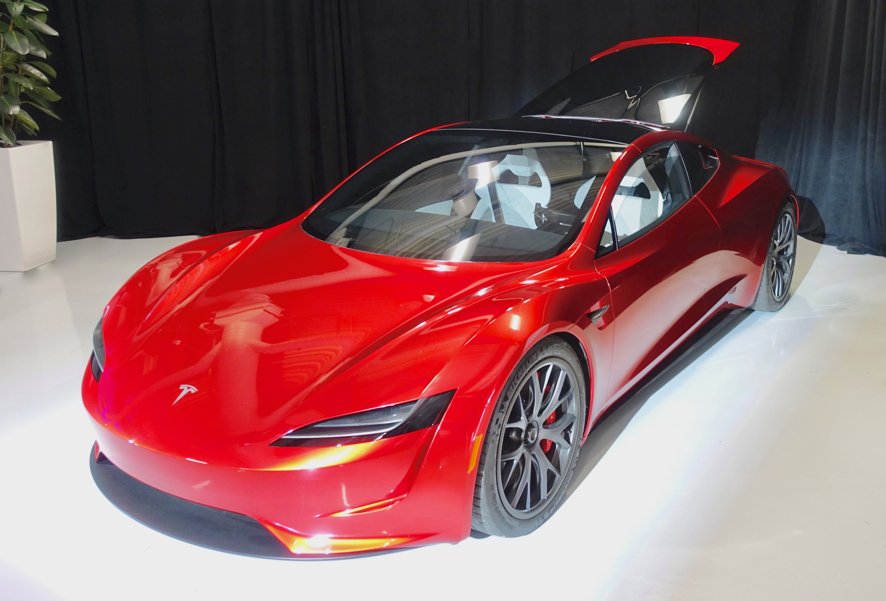
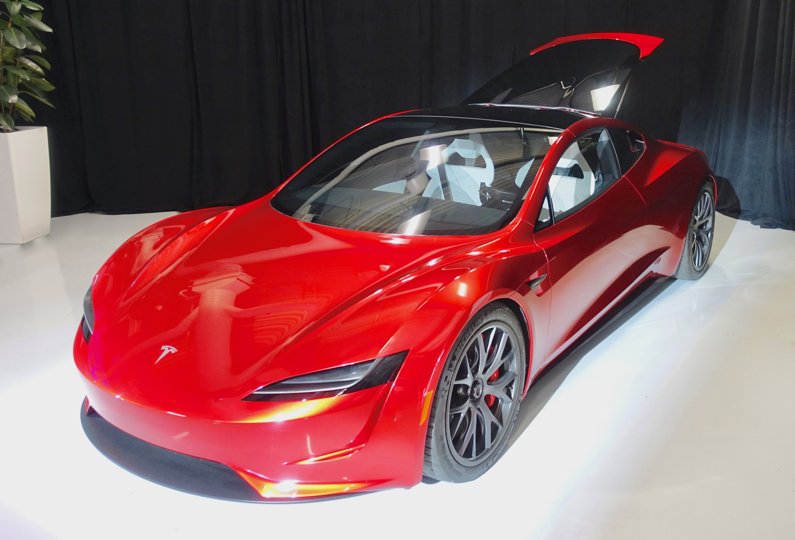

OTOMOBİLİM.COM
Tesla
Tesla, Inc. veya kısaca Tesla, elektrikli araç tasarlayan, üreten ve satan Palo Alto, Kaliforniya merkezli bir Amerikan şirketi. Şirket aynı zamanda, kardeş şirketi olan SolarCity aracılığıyla evlere güneş paneli veya solar kiremit satarak araçları evde dahi temiz pil enerjisi depolanmasını sağlıyor. TSLA ismi ile NASDAQ borsasında işlem gören halka açık şirkettir. Tarihinde ilk defa 2013 birinci çeyreğinde hissedarlarına kar payı dağıtmıştır.
Temmuz 2003'te mühendis Martin Eberhard ve Marc Tarpenning tarafından "Tesla Motors" olarak kurulan şirketin adı, elektirik teknolojisine büyük katkılarından dolayı ünlü mucit ve elektrik mühendisi olan Nikola Tesla'dan gelmiştir. Mart 2015 itibarıyla, Tesla 2008 yılından bu yana yaklaşık 70.000 elektrikli araba teslim etmiştir.
Tesla aynı zamanda elektrikli motor parçalarını, lityum-iyon pil paketleri dahil olmak üzere Daimler ve Toyota otomotiv üreticilerine pazarlar. Şirketin CEO'su Elon Musk, Tesla 'yı ortalama tüketiciye uygun fiyatlarla elektrikli arabalar sunmayı hedefleyen bağımsız bir otomobil üreticisi olarak öngördüğünü açıkladı. Ortalama tüketici için çıkaracağı Tesla Model 3 fiyatının devlet teşvikleri haricinde 35.000 USD$'dan, teslimatların ise 2017 sonunda başlaması bekleniyor. Ayrıca Tesla 2015 yılında, PowerWall adında, ev kullanımı için bir batarya ürünü çıkardığını açıkladı.
Sermaye
Firmaya ilk finansal destek, şu anda şirketin müdürlüğünü yapmakta olan, PayPal'ın eş-kurucusu Elon Musk'tan geldi. Musk, şirketin finansman sağlama konusundaki çalışmalarına önderlik etti. Tesla'nın yatırımcıları arasına Google kurucuları Sergey Brin ve Larry Page; eBay eski müdürü Jeff Skoll gibi önde gelen isimler katıldı. Mart 2007 itibarıyla şirket, özel sektörden sağladığı finansmanla, sermayesini 60 milyon doların üstüne çıkardı.
Tesla'nın Türkiye Ayağı
Tesla, 2015 Kasım ayında Türkiye'de "Tesla Motorları Satış ve Hizmetleri Limited Şirketi" adlı şirketi kurdu. Ancak şirket o tarihten sonra kayda değer bir faaliyette bulunmadı. 2016 yılından şirketin web sitesine Türkiye'de açılması planan hızlı şarj istasyonlarını gösteren 10 konum eklendi, ancak o tarihten sonra istasyonlarla ilgili herhangi bir gelişme de yaşanmadı.
 
